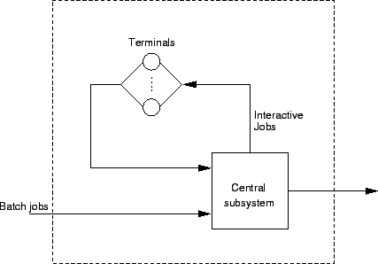

Next: เครือข่ายคิวแบบ Product Form
Up: ระบบเครือข่ายคิวเปิด และระบบเครือข่ายคิวปิด
Previous: ระบบเครือข่ายคิวแบบปิด:
Contents
Index
เป็นเครือข่ายคิวที่ทำงานแบบเครือข่ายปิดสำหรับงานบางกลุ่ม และบริการแบบเครือข่ายเปิดสำหรับงานสองชนิด รูป 6.3 แสดงตัวอย่างของระบบเครือข่ายคิวแบบผสมที่ประกอบด้วยงานสองลักษณะ ได้แก่งานแบบตอบสนองกับผู้ใช้ (Interactive) และงานแบบ Batch ระบบจะทำงานแบบเครือข่ายปิดสำหรับงานแบบตอบสนองกับผู้ใช้ และทำงานแบบเปิดสำหรับงานแบบ Batch
Figure 6.3:
ระบบเครือข่ายคิวแบบผสม
|

|
Vara Varavithya
2002-03-09